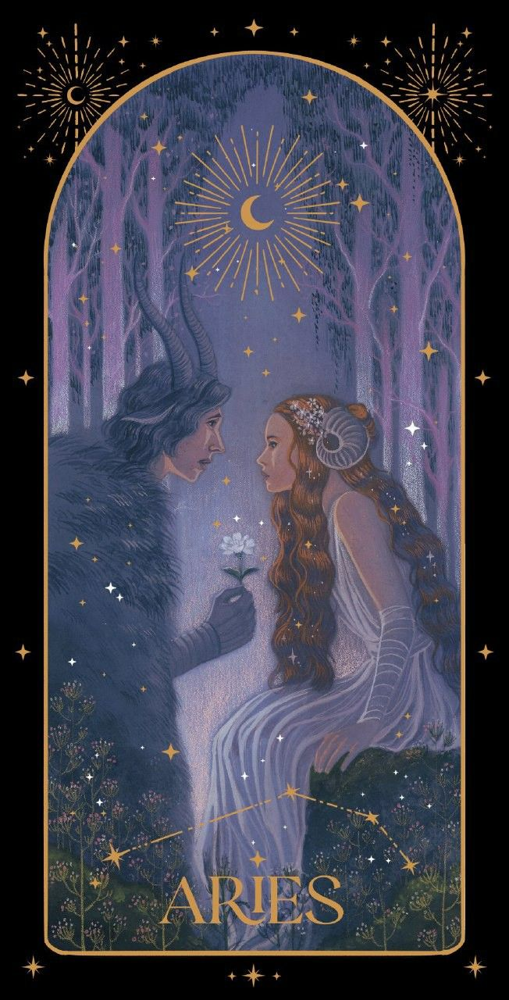
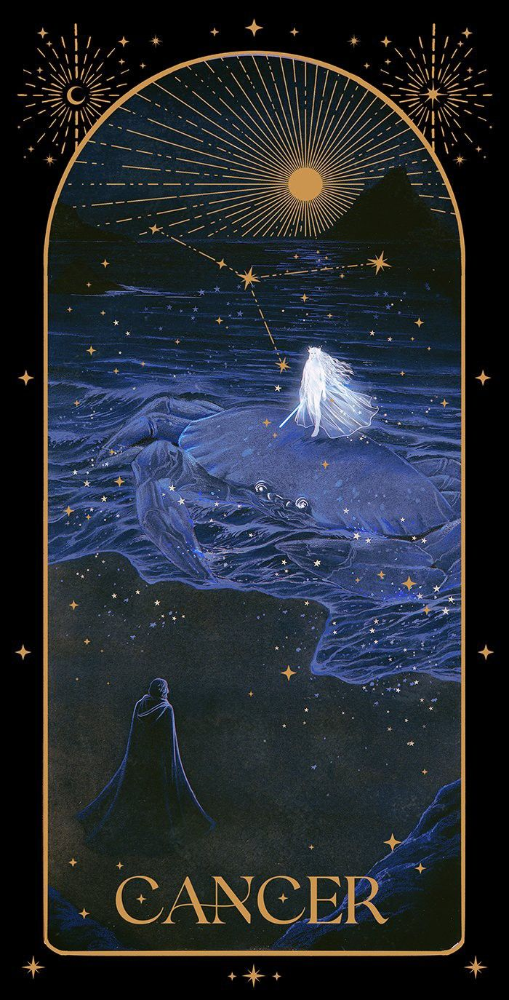
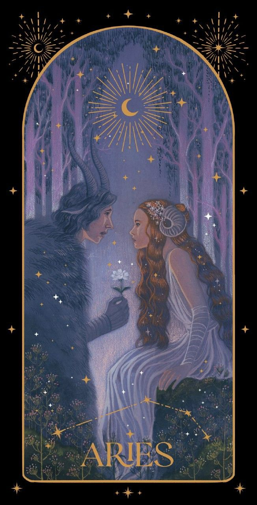
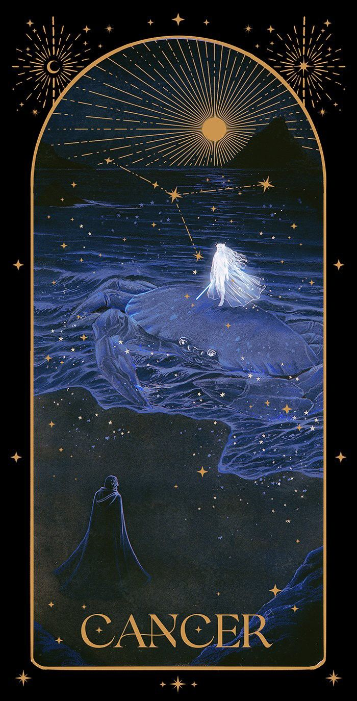
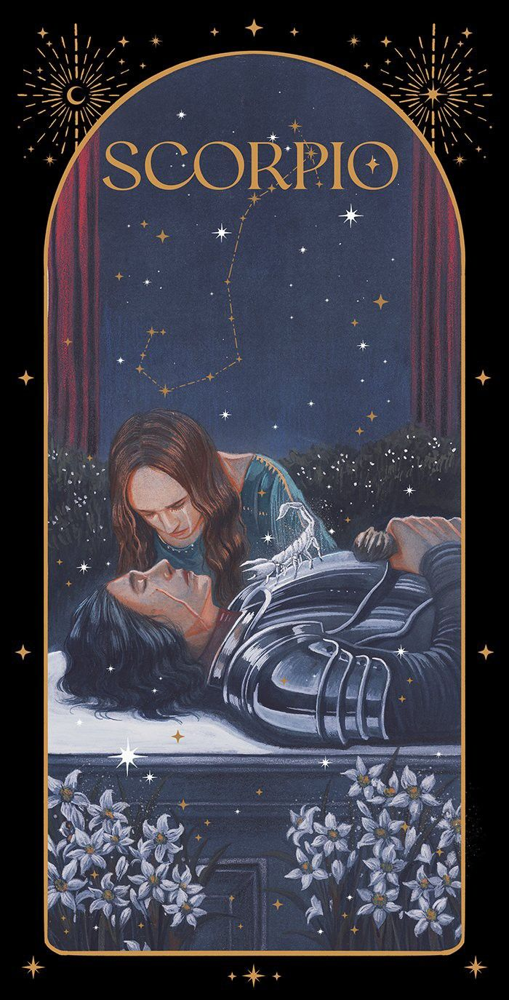
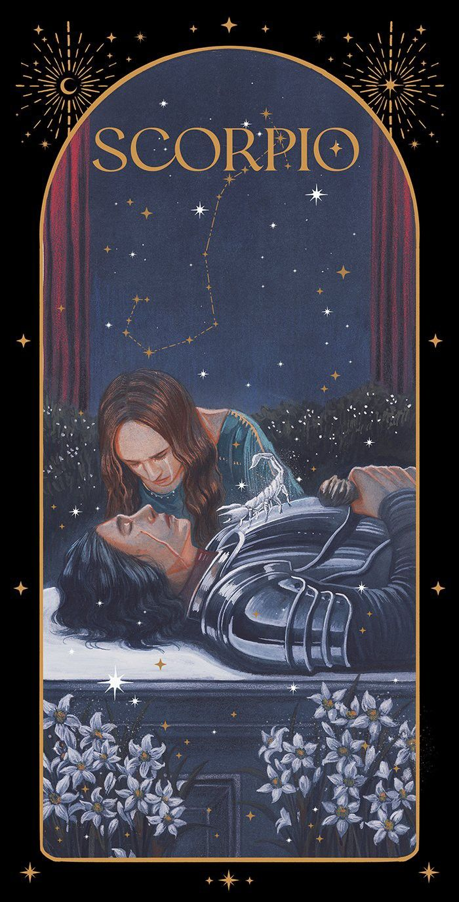
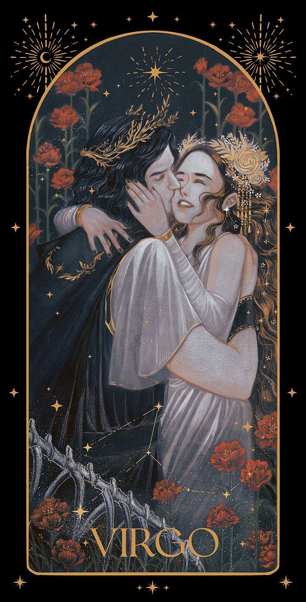
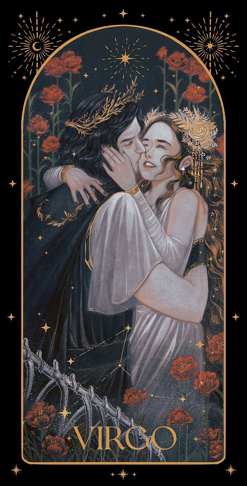

Desde el lunes 25 de noviembre de 2024 y hasta el domingo 15 de diciembre Mercurio estará retrógrado por última vez en este año. El tránsito planetario lo llevará del grado 22 de Sagitario hasta el grado 6.
En primer lugar, el astrólogo precisó que todos los planetas —no solo Mercurio— retrogradan en su recorrido (órbita) alrededor del Sol. Pero ¿qué es una retrogradación? Un efecto óptico en el que, visto desde la Tierra, pareciera que ese cuerpo celeste empezó a dar marcha atrás en su trayectoria. Esto se produce porque la velocidad de desplazamiento de ese planeta disminuye en comparación con la que tiene la Tierra alrededor del Sol. Así, da la impresión de que se “detuvo” o “retrocedió”.
Mercurio inicia su fase retrógrada en el grado 22 de Sagitario, una posición que, de acuerdo al autor, pondrá foco en la búsqueda de la verdad y el sentido de propósito. El tránsito afectará de distintas formas a cada signo zodiacal. “Sagitario, signo de fuego regido por Júpiter, es conocido por su inclinación a explorar, descubrir y expandir los horizontes, tanto a nivel físico como intelectual”, afirmó el astrólogo, quien agregó que el grado 22 en este signo “tiende a acentuar una perspectiva amplia, buscando un ideal o propósito superior”.

Descubre cuáles son los cristales y piedras más recomendados para canalizar energía positiva en el próximo año. El cuarzo rosa y la amatista lideran la lista como los favoritos para atraer amor y equilibrio emocional.
El eclipse solar que tendrá lugar en abril será un evento cósmico lleno de simbolismo. Los astrólogos predicen que marcará un momento de transformación y renacimiento espiritual para muchos signos del zodiaco.
La luna llena es un momento ideal para manifestar deseos y cerrar ciclos. Aprende cómo realizar rituales con velas, aceites esenciales y meditación para potenciar tus intenciones.
 



 



 
